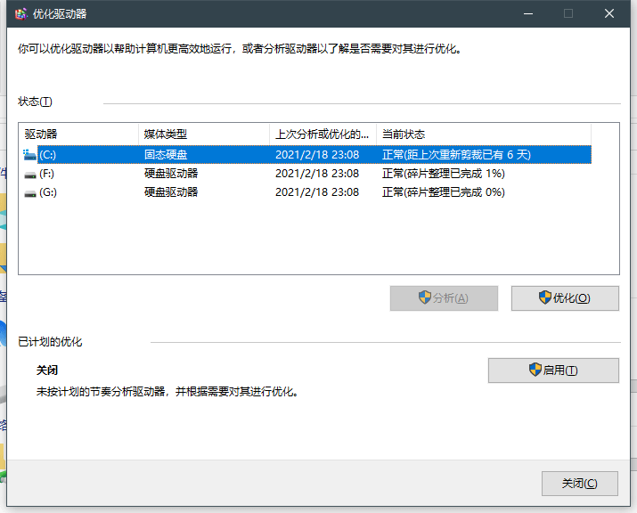

这是一个完全能优化的选择，Yes。当你选到适合自己，又不与MOD/插件冲突的Java版本，又低占用，稳定，性能流畅时这很适合做为你发展的一个好方向！
当一个适合自己的服务器Java版本时你离下一个优化已经不远了。我们通常选择Java版本是JDK1.8，也是大家通常使用又熟悉的Java8，这个版本是全部开服基本通用的，我之前试过1.16以下最高只能使用Java11开服，而且部分MOD与插件使用Java11出现冲突。我个人比较建议使用Java8。我给你们列一个Java目前流行的版本，方便你们查看。
Java JDK版本列表:
您可以为了性能选择Java 11，放弃一些东西达到性能。
最棒的一个Java JVM，与其Java8不如openj9，放弃Java8吧，试试看openj9的性能。启动速度减少大约40%，内存大约降低50%，吞吐量容易接近顶峰，当然这是我找的资料里面抽取的，在您的服务器不一定有效果。不过我还是要警告openj9与一些MOD/插件可能存在不兼容现象，不过这是极小的想象，实际服务器使用没有问题。
资料抽取：微服务中使用 OpenJ9 JVM 内存占用降60%(相对HotSpot)
下载地址:
国外网站，可以使用迅雷，IDM来提高下载，不过建议使用迅雷有P2P来辅助加速。
一个Java虚拟机平台，不过我们讲的不是虚拟机是JVM参数，针对服务器优化滴。
JVM调优可以换取更好的性能和更低的延迟，如果你搭配openj9性能可以翻几倍更加降低延迟，这是每个服主都要会的。
哦，不会吧，你还不会JVM参数添加？看看这个列子吧!
java -Xms1G -Xmx1G -jar 服务器端.jar
记得后缀名，别漏了后缀名！
-Xms与-Xmx,一个最小内存，一个是最大内存，我一般建议同时设置成同一个来提升一些性能，列如 -Xms1G -Xmx1G
下列不进行介绍，JVM参数太多了
.服务器模式
-server
提高并发
-Xincgc
OOP
-XX:+UseCompressedOops
加快编译
-XX:+AggressiveOpts
...
网站链接:JVM参数
G1是一个GC回收器，由于G1收获垃圾性能太好，G1代替了CMS。什么是垃圾为什么要回收垃圾?
答:这些都是一些变量带来的无用垃圾，比如空变量，变量值为空，无用的类等GC就是回收垃圾，回收一些没用的类，变量来释放资源。(不会吧不会吧这和百科有点像)
G1怎么使用?
答:一个JVM参数 -XX:+UseG1GC
哇哈哈哈，终于到本尊服主给大家推荐自己用的参数了。
java.exe -Xms1G -Xmx1G -server -Xincgc -Xss1024k -XX:+UseCompressedOops -XX:+AggressiveOpts -XX:-UseParallelGC -XX:+UseG1GC -XX:+UseThreadPriorities -XX:G1HeapRegionSize=16 -XX:InitiatingHeapOccupancyPercent=45 -XX:MaxGCPauseMillis=200 -XX:ParallelGCThreads=4 -XX:ConcGCThreads=2 -XX:InitiatingHeapOccupancyPercent=50 -XX:+UseFastAccessorMethods -XX:CMSInitiatingOccupancyFraction=70 -XX:-DisableExplicitGC -XX:TargetSurvivorRatio=90 -XX:+UseConcMarkSweepGC -jar spigot-1.15.2.jar
在这些参数我抽了几个有用的
-Xms1G -Xmx1G -server -Xincgc -Xss1024k -XX:+UseCompressedOops -XX:+AggressiveOpts -XX:-UseParallelGC -XX:+UseG1GC -XX:G1HeapRegionSize=16 -XX:InitiatingHeapOccupancyPercent=45 -XX:ParallelGCThreads=4 -XX:ConcGCThreads=2 -XX:InitiatingHeapOccupancyPercent=50 -XX:TargetSurvivorRatio=90 -XX:+UseConcMarkSweepGC
提升TPS的一些修改，可以帮助您在1G跑个12人!
你常常看到的server.properties这个文件有一些可以让TPS提升很大的优化，你多久没有动过他啦~
你以为，network-compression-threshold（网络封包压缩的阀值）就是默认256？不管CPU好不好，你们下载也会先进入CPU缓存到内存到硬盘，都会有性能占用，我们建议是如下:
network-compression-threshold = 128
服务器视距，服务器视距比客户视距多出5倍，通常主大厅4，PVP服务器默认或者8，生存服务器可以是4-6，空岛服务器8-12，RPG服务器8-12,这是影响一些生成或者其他
我们建议如下:
这个参数较小，没啥好讲的
spawn-limits:
monsters: 45
animals: 5
water-animals: 5
ambient: 10
不管你是Windows还是Linux，你可能都需要这个，在一个虚拟环境中无论怎么样都需要这个，因为分配的资源你没有优化无法用到最顶。
假如:当你搞起了自己的服务器，宽带是1Mbps，你能带动的有4个人，可是带动两个人宽带就过不来了，并发也不怎么强了，这时候是网络吞吐量不够强，越是强的吞吐量，可以达到共并发，低延迟的游戏
如何提升自己的并发:
(Win + R) > 输入gpedit.msc > 计算机配置 > Windows设置 > 基于策略的QoS > 右键这个策略 > 点击高级 QoS 设置 > 打钩你眼前的这个框框 > 选择级别3
设置了也不能发挥百分百的宽带，当然你每天看的那个抖音/快手说释放宽带，那个是有一点用处的
至于不懂的可以使用百度搜索"如何释放电脑保留宽带"
设置完这个还要一个需要CMD(管理员)：
netsh int tcp set global autotuninglevel = disabled
当然你以为就这?你们的Buserpi是不会让你们忍受普通的TCP的
CMD（管理员）：
netsh interface tcp set global congestionprovider=ctcp
netsh int tcp set supplemental template=internet congestionprovider=ctcp
netsh int tcp set global timestamps=enabled
磁盘读写将会影响整个系统性能，如果磁盘读写能力不够，系统可能会卡顿，缓慢等等这些，别以为你的机械硬盘加了傲腾就真的可以傲了，这个是缓存技术。实际体验没有那么爽的。
具体没啥用，我们给的是工作站版本，无需备份
别问，问就是服务器给的机械硬盘,整理之后，顺序是不乱可以提升读写
越大越好，读写会提升
服务器你睡眠有什么用，除非你为其他用户做出贡献
CMD（管理员）：
powercfg -h off
打开卓业性能可以提升10%的磁盘读写性能与cpu性能，不是很大，有小幅度提升性能，虚拟机里面用户们建议直接开（已帮你们了）
百度：“如何开启卓越性能”,我们是默认开了
Linux优不优化无所谓，跳过，下一个
Linux读写速度快,跳过，下一个
添加BBR可以降低一定延迟
NAT与公网，BPG,CN2,骨干网这些都是啥，我好蒙啊!
NAT,网络地址转换协议,由于公网缺乏，有人想到了NAT，于是NAT就是一个映射，将你的端口映射到一个公网的端口
公网，全球分配的一个IP不同于局域网，他共享了服务器的资源，全球都可以访问
CN2，中国电信下一代承载网，精品网络，路线有一般，稳定
163，中国电信的骨干网，此网络负责了90%的电信业务负载
骨干网，用来连接多个区域或地区的高速网络。每个骨干网中至少有一个和其他骨干网进行互联互通的连接点。不同的网络供应商都拥有自己的骨干网，用以连接其位于不同区域的网络。
服务器好坏在于CPU，硬盘，网络
一颗CPU好坏在于多老，性能如何，可以通过一些跑分，排行榜查看，比如CPU天梯图，CPU-Z分数，如果性能比较差的话，服务器TPS可能会下降
硬盘，在于读写,性能,缓存。如果你的服务器硬盘是机械硬盘，不会对服务器有影响只会增加读取的延迟，可能玩家会有一点点延迟感觉，不是很高，TPS下降幅度不会很大。
在Linux下，读写可能会良好一点，因为Linux的IO策略不一样，可能比windows快的要多
TPS,ICMP,TCP这些都是延迟罪魁祸首，当然TPS只是显示运算负载,ICMP是一个包来测试延迟，TCP传输数据
检测测一下TPS，ping一下延迟，看一下TCP连接是否稳定
当你加入一些插件，MOD建议玩家多时测一下TPS，看看问题出在哪里。
Ping时最少Ping 100次，查看100次中的状态，服务器尽量选择延迟适合您也适合广大玩家的地区
比如华南就适合这些地区:广东 广西 云南 贵州 湖南 江西 福建 香港 浙江 这些延迟都不是很高的
华北: 北京 内蒙古 天津 辽宁 吉林 黑龙江 山西 河北 山东 宁夏
华东: 上海 浙江 江苏 安徽 江西 福建 山东 湖北 河南
华西: 重庆 四川 甘肃 青岛 西藏 新疆
这些是我挑选广东，北京，上海，成都这些服务器范围延迟比较低的服务器，还是您的个人建议
有些人不懂Mbps与MB区分，1Mbps = 128Kbps, 计算方法 (宽带 / 8), 1MB = 1000KB，而 1MIB = 1024 KIB
当然开服宽带建议大一点，不然带不动很多人，导致卡。
1.当你选择更好的服务器，你应该考虑你现在服的人数与更加高的配置性能
2.服务器宽带至少需要大点的宽带，否则无法满足用户
3.尽量先问问客服服务器是什么CPU，节点在哪里，宽带是什么骨干
4.我们更多是为了您想，我们这个建议是让你学习Linux，来方便今后使用Linux开服来带来的更好性能
5.尽量考虑开服前的宣传，人手，技术，缺乏，优点，损失，收益。
6.大幅度预测损失，收益，不要盲目为了钱
7.每个任务都有好的分配，技术干什么，宣传干什么，建筑干什么的
8.给自己服务器画一个表，让自己慢慢划掉服务器运行的时间，这样更加有意义
9.尽量不要做一些违法的事情，你的玩家在违法你也要阻止，这会影响你的名誉和你的服务器
10.在被诽谤时冷静下来，以最好的证据来打击这些人，你可能会收获更棒的名誉
11.建议限制未成年充值余额，最好未满16充值不得超过>300元
1.分配好每一个管理的团员，组
2.提前预测我们的情况,比如股票，服务器攻击，服务器人数下跌
3.针对未成年不授予强迫要求
4.Buserpi CEO没满16，我们就觉得可以做一个部分非盈利组织
5.合理的分配任务给熟悉的人做
6.当成员赞助超过200元，我，管理者是无权收取您的赞助
7.不允许做违法的事情
8.对文件分类重要文件分类，方便大家阅读
9.内部争执，内部进行禁言，移除，给予1-3冷静期
10.泛滥权限，比如Buserpi机房权限，管理权限，网站权限等等，一旦发现马上追究法律
{kind=link}
{kind=link}